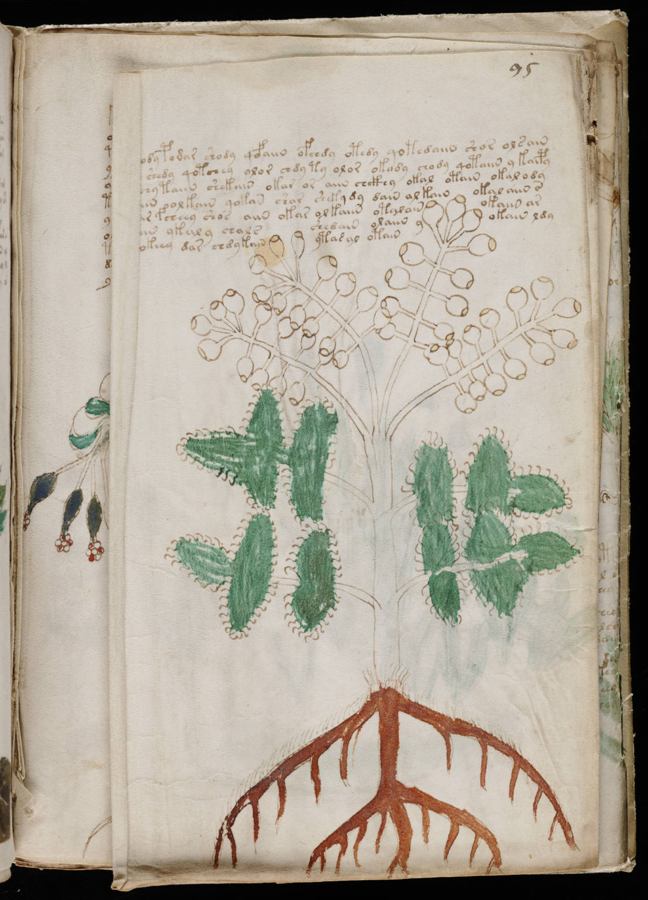

f95v2
1tchody podar shody qofaiin ofchdy otedy qotedaiin shor olsain2sol shedy qotchey olor chdy ty olor okody chody qotaiin ykaipy3arcsy taiin shekain okar or aiin chckhy okal otain okal ody4daiin olkain qokan shar shekydy dain alkainokal aiin s5tar fcheey shos aiin okar olkaiin otalainokaiin ar6dain ykaly chalsshedain olaiin yokain ldy7qokeey dar chdy kainytasal otain
